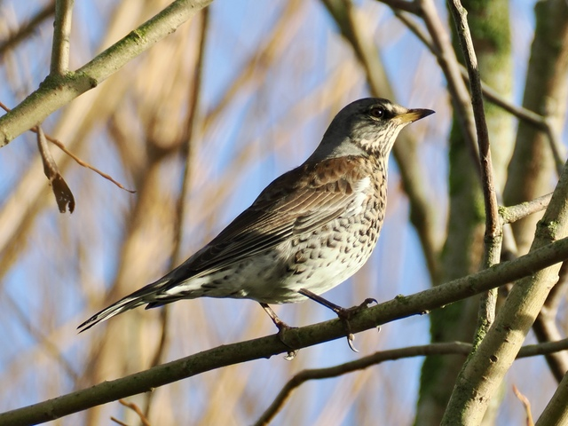
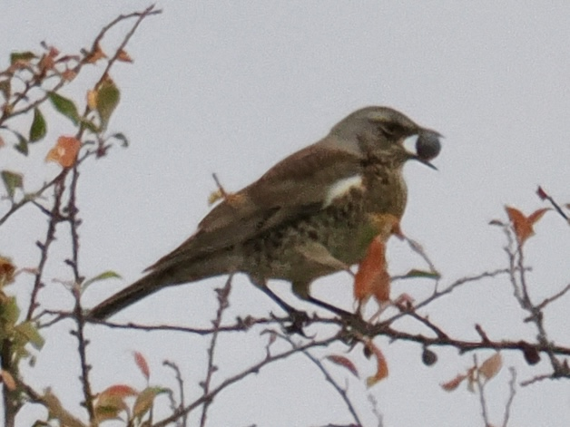

Fieldfare
Turdus pilaris
Order: Passeriformes
Family: Turdidae

A large thrush with a grey head, brown back, and spotted underparts. A winter visitor to the UK, often seen in flocks. Quite skittish, but not as shy as Redwing.

Berries are a favourite food in winter.